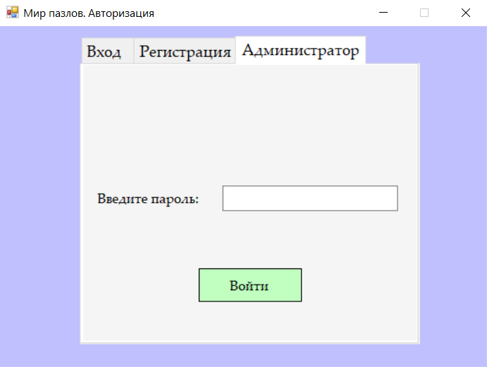
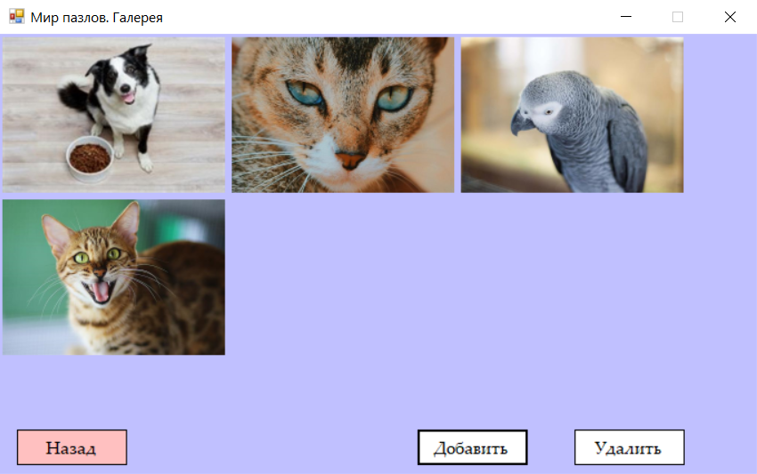
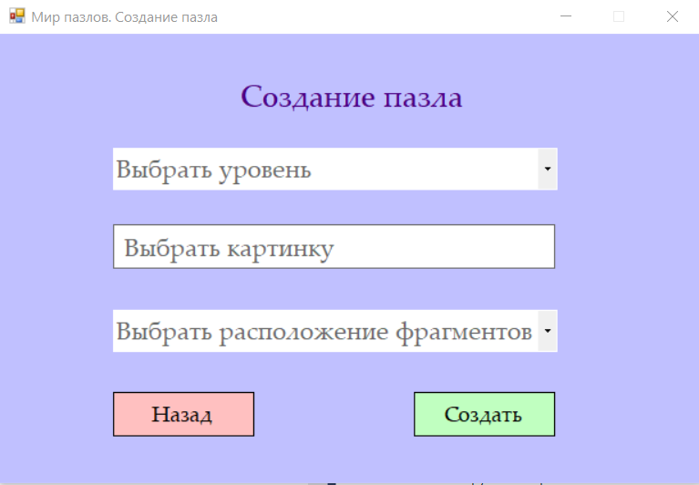
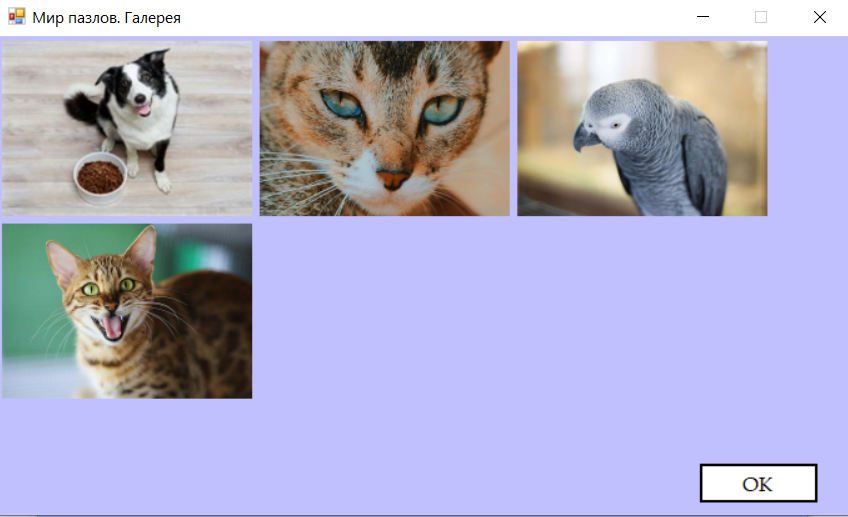
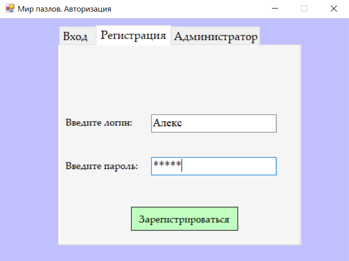
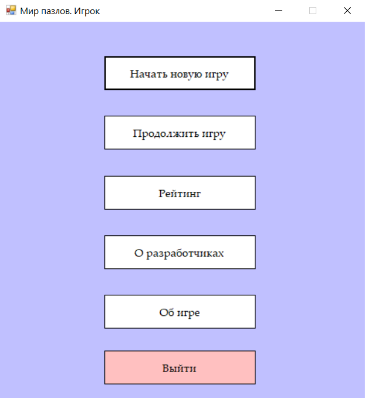
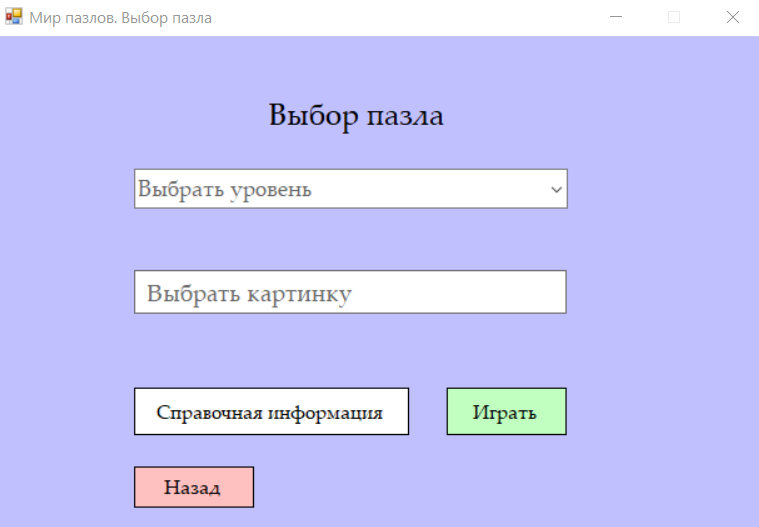

Справочная инфомация игры «Мир пазлов»
Назначение системы
Назначение системы
Автоматизированная система «Игра «Мир пазлов» предназначенную для создания и сбора пазла. В системе предусмотрена работа в двух режимах: «Администратор» и «Пользователь(игрок)». Администратор может создавать пазлы различного уровня сложности. Игрок имеет возможность собирать пазлы, используя систему подсказок. И для администратора, и для пользователя предусмотрена визуализация работы программы.
Вернуться наверх
1. Режим администратора
Администратор автоматизированной системы «Игра «Мир пазлов» имеет возможность работать с галереей. Также ему доступна настройка уровня сложности и создание пазла.
Вернуться наверх
1.1 Авторизация в системе
После запуска системы откроется окно авторизации (рисунок 1). Для того, чтобы начать работу в системе в качестве администратора, пользователь должен выбрать на форме (рисунок 1) соответствующую вкладку, ввести определенный пароль и нажать кнопку «Войти». Установленный пароль для администратора «admin». При успешном входе в систему, администратору предлагается выбор одного из пунктов меню, которое представлено на рисунке 2.

Рисунок 1 – Форма авторизации
Рисунок 2 – Форма меню администратора
Вернуться наверх
1.2 Настройка уровня сложности
Для того, чтобы выполнить настройку уровня сложности, необходимо нажать на кнопку «Настроить уровень сложности» (рисунок 2). Система откроет экранную форму, на которой администратор должен выбрать номер уровня, нажав на соответствующую кнопку. Для того, чтобы выбрать вид фрагментов, необходимо нажать на выпадающий список и выбрать либо «Прямоугольные», либо «Треугольные». Чтобы установить количество фрагментов по вертикали и горизонтали, необходимо с помощью элементов управления указать число. По окончании настройки уровня сложности администратор должен нажать кнопку «Готово», после чего он вернется на экранную форму «Меню администратора» (рисунок 2). Если в настройке уровня нет необходимости, то можно вернуться к меню, для этого нужно нажать кнопку «Назад».
Рисунок 3 – Форма настройки уровня сложности
Вернуться наверх
1.3 Работа с галереей
При выборе пункта меню «Работа с галереей» система откроет форму, где будут размещены изображения, добавленные ранее, приведенные к стандартному размеру, которые администратор будет использовать для создания пазлов (рисунок 4). Для добавления нового изображения, нужно нажать кнопку «Добавить» внизу экранной формы, после чего откроется проводник, в котором указывается путь до нужной картинки, далее картинка добавляется в галерею. Чтобы удалить изображение, его необходимо выбрать и нажать кнопку «Удалить». Для возврата к меню, нужно нажать кнопку «Назад».

Рисунок 4 – Форма работы с галереей
Вернуться наверх
1.4 Создание пазла
Для создания пазла, администратор должен выбрать пункт меню «Создать пазл» (рисунок 2). Система боткроет соответствующую экранную форму (рисунок 5), где администратор может выбрать номер уровня, нажав на выпадающий список. Для выбора изображения, необходимо нажать кнопку «Выбрать картинку», в этом случае откроется экранная форма со списком доступных изображений (рисунок 6), администратор должен выбрать картинку, нажав на нее, и нажать кнопку «ОК». Система вернется к предыдущей форме, в которой нужно еще выбрать расположение фрагментов, нажав на выпадающий список и указть либо «На поле», либо «На ленте». Чтобы пазл с заданными параметрами создался, надо нажать кнопку «Создать». Для возврата к меню, нужно нажать кнопку «Назад».

Рисунок 5 – Форма создания пазла

Рисунок 6 – Форма с доступными изображениями
Вернуться наверх
2. Режим пользователя
Пользователь автоматизированной системы «Игра «Мир пазлов» имеет возможность сбора пазла с организацией системы подсказок. Игроку начисляются очки и выполняется подсчет времени, затраченного на сборку, соответственно, пользователь может посмотреть рейтинг игроков по времени и по количеству набранных очков.
Вернуться наверх
2.1 Авторизация и регистрация в системе
Прежде, чем начать работать с системой «Игра «Мир пазлов» в режиме пользователя, необходимо либо зарегистрироваться (рисунок 7), либо выполнить вход под логином и паролем (рисунок 8), которые были зарегистрированы ранее.
Для регистрации в системе, пользователь должен выбрать вкладку «Регистрация» и заполнить поля. Если пользователь введет некорректный логин или пароль, система выдаст подсказки. В случае, если пользовать с указанным логином и паролем существует, система также предупредит об этом.
Для входа в систему, пользователь должен выбрать вкладку «Вход» (рисунок 8) и заполнить соответствующие поля. Если данные введены некорректно, система выдаст подсказки.
После успешного заполнения полей при входе или при регистрация, пользователю предлагается выбор одного из пунктов меню, которое представлено на рисунке 9.

Рисунок 7 – Форма регистрации пользователя

Рисунок 8 – Форма авторизации пользователя

Рисунок 9 – Форма пользовательского меню
Вернуться наверх
2.2 Начало игры. Сбор пазла
Для того, чтобы начать играть, пользователь должен выбрать пункт меню «Начать новую игру» (рисунок 9). В этом случае система откроет форму, которая представлена на рисунке 10. Пользователь должен выбрать номер уровня, нажав на выпадающий список и выбрав нужный номер, и выбрать картинку, нажав на кнопку «Выбрать картинку», после этого откроется галерея, как на рисунке 6, со списком доступных, для выбранного уровня, изображений. Пользователь должен выбрать картинку и нажать на кнопку «ОК». Система откроет предыдущую форму (рисунок 10), пользователю необходимо нажать кнопку «Играть»
Далее система откроет игровую форму (рисунок 11), где вид фрагментов, их расположение и количество будут заданы в соответствии с настройками выбранного уровня.

Рисунок 10 – Форма выбора пазла
Рисунок 11 – Игровая форма
Вернуться наверх
2.3 Просмотр рейтинга игроков
Text Text Text Text Text Text Text Text Text Text Text Text Text Text Text Text Text Text Text Text Text Text Text Text Text Text Text Text Text Text Text Text Text Text Text Text Text Text Text Text Text Text Text Text Text Text Text Text Text Text Text Text Text Text Text Text Text Text Text Text Text Text Text Text Text Text Text Text Text Text Text Text Text Text Text Text Text Text Text Text Text Text Text Text Text Text Text Text Text Text Text Text Text Text Text Text Text Text Text Text Text Text Text Text Text Text Text Text Text Text Text Text Text Text Text Text Text Text Text Text Text Text Text Text Text Text Text Text Text Text Text Text Text Text Text Text
Вернуться наверх